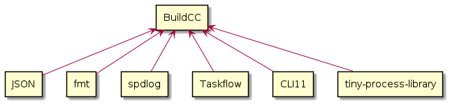

Software Heirarchy#
BuildCC single lib#
BuildCC sources are compiled into a single library
The easiest way to use
BuildCCAfter building the project all we need to do is
-lbuildcc -ltiny-process-libraryor equivalent

BuildCC interface lib#
BuildCC is broken up into multiple smaller libraries
This has been done mainly for unit-testing and mocking segregation
It helps to easily architect the
BuildCClibrary by visualizing internal dependenciesPlease see Testing for more information of how the
mock_*equivalent of these libraries are used
![rectangle JSON as json #palegreen
rectangle fmt as fmt #palegreen
rectangle spdlog as spdlog #palegreen
rectangle Taskflow as taskflow #palegreen
rectangle CLI11 as cli11 #palegreen
rectangle "tiny-process-library" as tpl #palegreen
rectangle Environment as env #aliceblue
rectangle Schema as schema #aliceblue
rectangle Toolchain as toolchain #aliceblue
rectangle Target as target #aliceblue
rectangle "Toolchain specialized" as toolchain_specialized #aliceblue
rectangle "Target specialized" as target_specialized #aliceblue
rectangle Args as args #aliceblue
rectangle Register as register #aliceblue
rectangle "Supported Plugins" as plugins #aliceblue
rectangle BuildCC as buildcc
fmt -up-> env
spdlog .up.> env
tpl .up.> env
cli11 -up-> args
taskflow -up-> register
json .up.> schema
env -up-> schema
schema -up-> toolchain
toolchain -up-> target
taskflow -up-> target
toolchain -up-> toolchain_specialized
target -up-> target_specialized
target -up-> args
target -up-> register
target -up-> plugins
toolchain_specialized -up-> buildcc
target_specialized -up-> buildcc
args -up-> buildcc
register -up-> buildcc
plugins -up-> buildcc](../_images/plantuml-ae3f7ebf4d173c6318e66ad7923fce75225f7336.png)